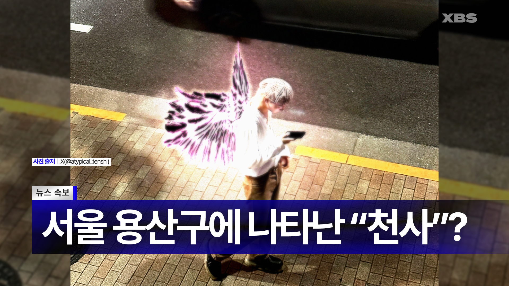
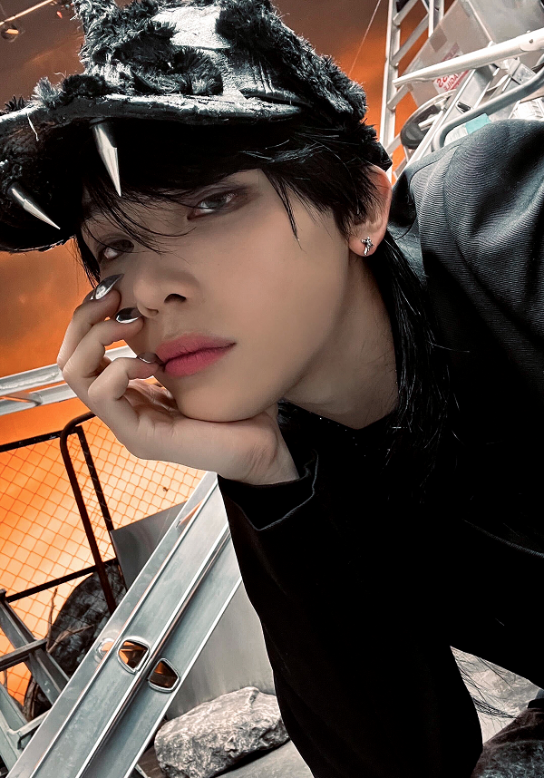

‘Atypical Tenshi’? 林口 지부 소속 니콜라스, 인간계 뉴스에 등장
등록:2025.05.28
린커우 지부 소속 니콜라스가 인간계 뉴스에 등장해 충격을 안겼다.

-인간계 뉴스에 담긴 니콜라스 (출처:인간계 SNS)
천국 시간으로 오늘 오전 9시경, 린커우 지부 소속 천사 니콜라스가 임무 수행을 위해 지상계에 파견되었다. 출현 직후 인간 세계 주요 방송 및 뉴스 매체를 통해 긴급 보도되었으며, 인간계
반응은 예상을 뛰어넘는 속도로 확산되며 천상에서도 이를 중대 관심 사안으로 분류하고 있다.
지상계 통신망에 따르면, 니콜라스는 인간들이 사용하는 방송 및 인터넷 매체에 포착되어 보도되었다. 현지 인간 매체들은 니콜라스를 ‘정체불명의 날개 달린 존재’, ‘이승에 나타난 천사’
등으로 보도했으며, 특히 그의 검은색 날개가 인간 사회 전통적 천사 이미지와 명백히 상이하다는 점에 주목하고 있다. 일각에서는 니콜라스가 출현 당시 날개를 비가시화하지 않은 점이 해당
정체 노출 사태를 촉발시킨 원인 중 하나로 보고 있다. 이에 따라 인간들은 그를 ‘비정형적인 천사’로 해석하며, 자발적으로 ‘Atypical
Tenshi’라는 명칭을 부여한 것으로
분석된다.
이 명칭은 일본어로 ‘천사’를 뜻하는 ‘Tenshi(天使)’와, 전형적이지 않음을 뜻하는 영어 ‘Atypical’을 결합한 표현으로, 니콜라스의 외형과 분위기가 기존 종교 및 신화 속
천사의 이미지와 다르다는 인간들의 인식을 반영한 결과로 보인다. 천상문화해석연구소에 따르면, 이는 “인간들의 무의식이 상위 존재의 다양성을 받아들이는 진화적 신호”일 가능성도 제기된다.
하지만 더욱 이례적인 점은, 니콜라스가 출현 직후 인간 사회의 상업 시설을 방문해 다량의 쇼핑을 즐겼다는 사실이다. 목격자들에 따르면 그는 패션 편집숍, 북카페, 디저트 전문점, 심지어
생활용품점까지 두루 섭렵하며 인간 화폐 결제도 능숙하게 수행한 것으로 전해졌다. 서울 강남의 한 편집숍 점원은 “말도 너무 예의 바르고, 취향이 독특했어요. 완벽한 스타일링
덕분에 연예인인 줄 알았어요”라고 증언했다. 일부 인간은 그를 콘셉트 아티스트로 오해해 사인을 요청하기도 했으나, 그는 조용히 미소만 남긴 채 사라졌다고 한다.

-린커우 지부 소속 니콜라스 (출처:니콜라스 블로그)
한편, 이번 출현을 계기로 니콜라스는 천상계 전역에서 폭발적인 인기를 끌고 있다. 그는 단숨에 가장 주목받는 천사로 부상했으며, 일부 천사계 젊은층 사이에서는 그를 따라 검은색 깃털
염색이나 인간 스타일 패션을 따라 하는 ‘니콜라스 스타일’ 열풍이 일고 있다.
디아고 카파야로 기자 kakkoiihamstar@777.net